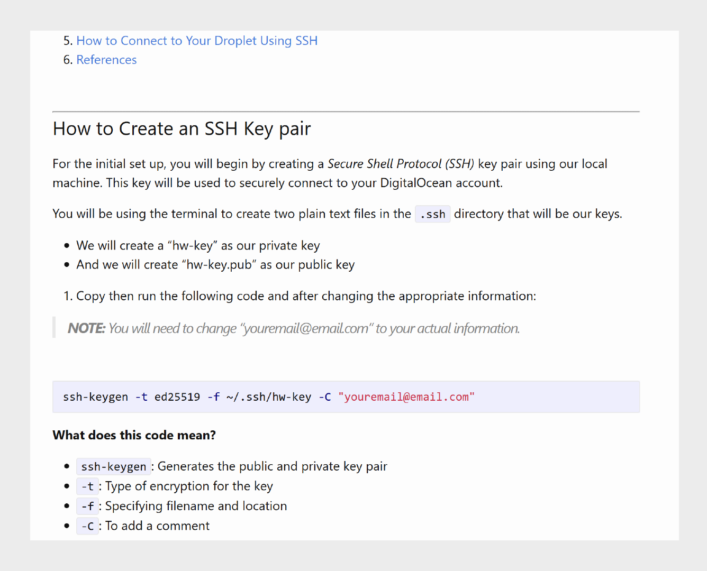

Writing Samples

Spartan Controls Sales and Makreting Administrator SOP
Type: Standard Operating Procedure (SOP)
Tools used: Microsoft Office, Adobe Indesign
Developed standard operating procedures (SOPs) for the Sales and Marketing Administrator role. These documents explained task workflows, outlined key responsibilities, and provided step-by-step guidance on event planning and execution.
Learn More

How to Create Virtual Servers on Digital Ocean using Cloud-Init
Type: How-to Guide
Tools used: Markdown
An educational guide for students to learn about creating droplets on DigitcalOcean and using cloud-init files for automatic configutation.
View Sample Learn More
Quick Guide to Create a Community Discord Server
Type: How-to Guide
Tools used: Microsoft Office, Adobe Indesign
Created user guides, manuals, and documentation for software applications, hardware products, and technical processes.
Learn More